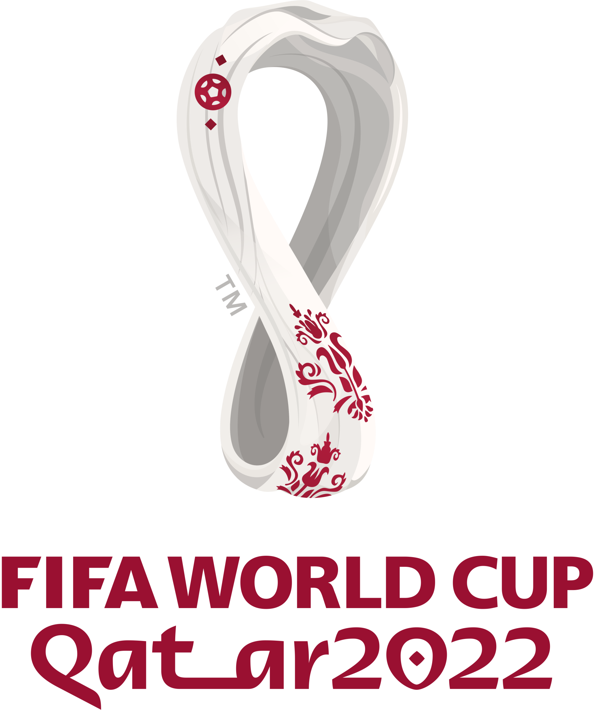
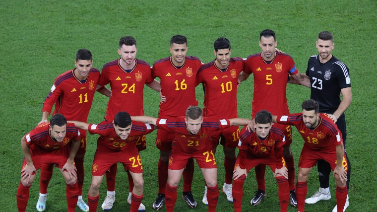

<!DOCTYPE html>
<html lang="hu">
<head>
    <meta charset="UTF-8">
    <meta http-equiv="X-UA-Compatible" content="IE=edge">
    <meta name="viewport" content="width=device-width, initial-scale=1.0">
    <title>'2022-es labdarúgó-világbajnokság</title>
</head>
<body>
    
</body>
</html>
    <meta http-equiv="X-UA-Compatible" content="IE=edge">
    <meta name="viewport" content="width=device-width, initial-scale=1.0">
    <link rel="stylesheet" href="css\sajat.css">
    <script src="bootstrap\js\bootstrap.bundle.min.js"></script>
    
    <div class="container">

        <nav class="navbar navbar-expand-lg navbar-light bg-light">
            <a class="navbar-brand" href="#">
                
            </a>
            <button class="navbar-toggler" type="button" data-bs-toggle="collapse" data-bs-target="#navbarNav" aria-controls="navbarNav" aria-expanded="false" aria-label="Toggle navigation">
                <span class="navbar-toggler-icon"></span>
              </button>
            <div class="collapse navbar-collapse" id="navbarNav">
                <ul class="navbar-nav">
                    <li class="nav-item active">
                        <a class="nav-link">Bevezető</a>
                    </li>
                    <li class="nav-item">
                        <a class="nav-link">Csapatok</a>
                    </li>
                    <li class="nav-item">
                        <a class="nav-link">Címvédők</a>
                    </li>
                    <li class="nav-item">
                        <a class="nav-link">Statisztika</a>
                    </li>
                </ul>
            </div>
        </nav>

        <section>
            <h2 style="color: rgb(30, 125, 19);">Bevezető</h2>
            <p> A 2022-es labdarúgó-világbajnokság a 22. világbajnokság, amelyet az FIFA szervez a tagországai férfi labdarúgó-válogatottjainak számára. A tornát Katar rendezi, a helyi időjárás miatt a szokásos időszaktól eltérően, november 20. és december
                18. között. A rendező országról 2010. december 2-án döntött a Nemzetközi Labdarúgó-szövetség. Ugyanekkor döntöttek a 2018-as labdarúgó-világbajnokság helyszínéről is. A világbajnokság a selejtezőkkel együtt FIFA-rendezvénynek minősül és
                a FIFA szabályait alkalmazzák. Katar még soha nem szerepelt labdarúgó-világbajnokságon. Ez az első alkalom, hogy a világbajnokságot egy arab országban tartják, és 2002 óta az első, amelyet Ázsiában. Ez az utolsó világbajnokság, amelyen
                32 csapat vesz részt, 2026-ban 48-ra emelkedik a résztvevők száma. A világbajnokság nyitómérkőzését Katar és Ecuador játszotta, az <cite>Al Bayt Stadion</cite>ban, míg a döntőt 2022. december 18-án rendezik. A címvédő Franciaország.
            </p>
        </section>

        <section>
            <h2 style="color: rgb(30, 125, 19);">Csapatok</h2>
            <div class="row">
                <div class="col-6">
                    <div class="card">
                        
                        <div class="card-body">
                            <h3>Argentin csapat</h3>
                            <p class="card-text">Az argentin labdarúgó-válogatott Argentína nemzeti labdarúgó csapata, amelyet az argentin labdarúgó-szövetség (spanyolul Asociación del Fútbol Argentino) irányít. A csapat beceneve: Albicelestes, ennek jelentése „égszínkék-fehérek”
                                (a válogatott mezének színei). </p>
                        </div>
                    </div>
                </div>
                <div class="col-6">
                    <div class="card">
                        
                        <div class="card-body">
                            <h3>Ausztrál csapat</h3>
                            <p class="card-text">Ausztrália tradicionálisan Óceánia egyik legerősebb csapata és az egyetlen válogatott a világon, melynek sikerült megnyernie két konföderáció kontinentális tornáját is. Az OFC-nemzetek kupáját négy (1980, 1996, 2000, 2004),
                                az Ázsia-kupát egy (2015) alkalommal nyerték meg. Hatszor jutottak ki a világbajnokságra, először 1974-ben, majd 2006 és 2022 között valamennyi tornán részt vettek. Négyszer szerepeltek a konföderációs kupán is, ahol a
                                legjobb helyezésük egy ezüstérem, amit az 1997-es tornán szereztek. </p>
                        </div>
                    </div>
                </div>
                <div class="col-6">
                    <div class="card">
                        
                        <div class="card-body">
                            <h3>Brazil csapat</h3>
                            <p class="card-text">Brazília a labdarúgó-világbajnokságok történetének legsikeresebb válogatottja öt világbajnoki címmel. Az egyetlen csapat a világon, amely valamennyi világbajnokságon részt vett, és az első, amely ötször nyerte el a győztes
                                címét (1958, 1962, 1970, 1994, 2002). Kétszer nyertek ezüstérmet (1950, 1998), és kétszer lettek harmadikok (1938, 1978). Mindemellett négyszer hódították el a konföderációs kupát, és kilencszeres Copa América-győztesek.
                            </p>
                        </div>
                    </div>
                </div>
                <div class="col-6">
                    <div class="card">
                        
                        <div class="card-body">
                            <h3>Franciaország</h3>
                            <p class="card-text">Franciaország egyike volt annak a négy európai országnak, amely részt vett a legelső labdarúgó-világbajnokságon 1930-ban és egyike annak a nyolc nemzetnek, amelynek sikerült elhódítania a világbajnoki trófeát. Kétszeres világbajnokok,
                                az elsőt hazai közönség előtt 1998-ban, a másodikat 2018-ban nyerték. Az Európa-bajnokságon két alkalommal, 1984-ben Michel Platini és 2000-ben Zinédine Zidane vezérletével végeztek az első helyen. Miután 2001-ben a konföderációs
                                kupát is sikerült elhódítaniuk, Argentínával egyetemben ők lettek az egyetlen nemzet, amelynek sikerült megnyernie a FIFA által szervezett két legrangosabb sorozatot, a világbajnokságot, a konföderációs kupát illetve az
                                olimpiát. A 2006-os világbajnokság döntőjében Olaszország ellen, tizenegyespárbajban veszítettek 5–3 arányban. </p>
                        </div>
                    </div>
                </div>
                <div class="col-6">
                    <div class="card">
                        
                        <div class="card-body">
                            <h3>Német csapat</h3>
                            <p class="card-text">Németország egyike a világ legsikeresebb válogatottjainak. Négy alkalommal nyerték meg a világbajnokságot és három alkalommal az Európa-bajnokságot. Emellett a világ egyik legkiegyensúlyozottabb válogatottja is, a három világ-
                                és kontinensbajnoki cím mellett négyszer voltak vb ezüstérmesek, háromszor Eb ezüstérmesek, valamint négy alkalommal szereztek bronzérmet a világbajnokságon, háromszor pedig az Európa-bajnokságon. </p>
                        </div>
                    </div>
                </div>
                <div class="col-6">
                    <div class="card">
                        
                        <div class="card-body">
                            <h3>Holland csapat</h3>
                            <p class="card-text">Eddig három alkalommal (1974, 1978, 2010) játszottak világbajnoki döntőt, de mindháromszor vesztesen hagyták el a pályát. A válogatott eddigi egyetlen tornagyőzelme az 1988-as Európa-bajnokságon született Marco van Basten és
                                Ruud Gullit vezérletével. A döntőben a Szovjetuniót győzték le 2–0-ra. </p>
                        </div>
                    </div>
                </div>
                <div class="col-6">
                    <div class="card">
                        
                        <div class="card-body">
                            <h3>Japán csapat</h3>
                            <p class="card-text">A válogatott eddig hat alkalommal jutott ki labdarúgó-világbajnokságra (1998, 2002, 2006, 2010, 2014, 2018), valamint nyolcszor vett részt (1988 óta folyamatosan) az ázsiai kontinensviadalon az Ázsia-kupán és négyszer nyerte
                                meg (1992, 2000, 2004 és 2011), illetve ezüstérmes lett a 2001-es konföderációs kupán. </p>
                        </div>
                    </div>
                </div>
                <div class="col-6">
                    <div class="card">
                        
                        <div class="card-body">
                            <h3>Spanyol csapat</h3>
                            <p class="card-text">Háromszoros Eb-, és egyszeres vb-győztes. A spanyol válogatott lett az első európai csapat, amely egymás után három nagy tornát nyert. A 2008-as Eb-győzelem és a 2010-es vb-győzelem után a 2012-es Eb-t is megnyerték.</p>
                            <p class="card-text">1964-ben első alkalommal nyerte meg az Európa-bajnokságot, 1984-ben pedig a második helyen végzett. Az 1992-es barcelonai olimpián is aranyérmes lett, mindemellett még két ezüstérmet is szereztek az ötkarikás játékokon (1920,
                                2000).
                            </p>
                            <p class="card-text">2006 novembere és 2009 júniusa közötti időszakban 35 mérkőzésen maradt veretlen. A 2009-es konföderációs kupa elődöntőjében az USA-tól szenvedett vereséget. 2008 júliusában története során először került a FIFA-világranglista
                                élére. </p>
                        </div>
                    </div>
                </div>
            </div>
        </section>

        <section>
            <h2 style="color: rgb(30, 125, 19);">Címvédők</h2>
            <ul>
                <li>Adrien Rabiot</li>
                <li>Alphonse Areola</li>
                <li>Antoine Griezmann</li>
                <li>Aurelien Tchouameni</li>
                <li>Benjamin Pavard</li>
                <li>Benoit Badiashile</li>
                <li>Dayot Upamecano</li>
                <li>Eduardo Camavinga</li>
                <li>Ferland Mendy</li>
                <li>Ibrahima Konate</li>
                <li>Jordan Veretout</li>
                <li>Jules Kounde</li>
                <li>Kingsley Coman</li>
                <li>Kylian Mbappe</li>
                <li>Lucas Hernandez</li>
                <li>Matteo Guendouzi</li>
                <li>Olivier Giroud</li>
                <li>Ousmane Dembele</li>
                <li>Randal Kolo Muani</li>
                <li>Raphael Varane</li>
                <li>Steve Mandanda</li>
                <li>Theo Hernandez</li>
                <li>William Saliba</li>
                <li>Youssouf Fofana</li>
            </ul>
            <p><b>Az oldal készítője:</b><i>Gajdán Edit,</i>2023</p>
        </section>

    </div>